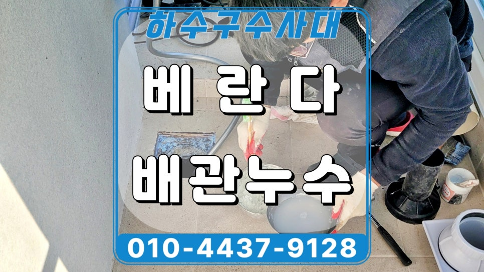
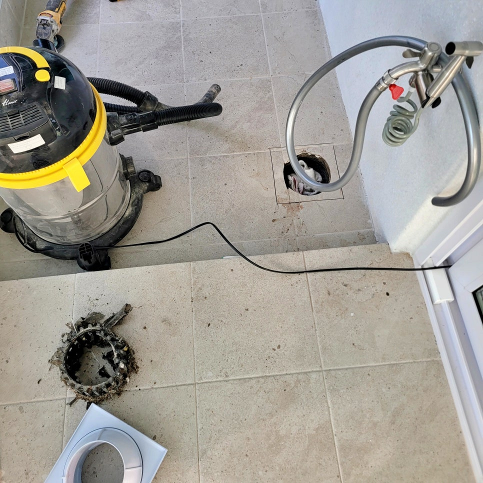
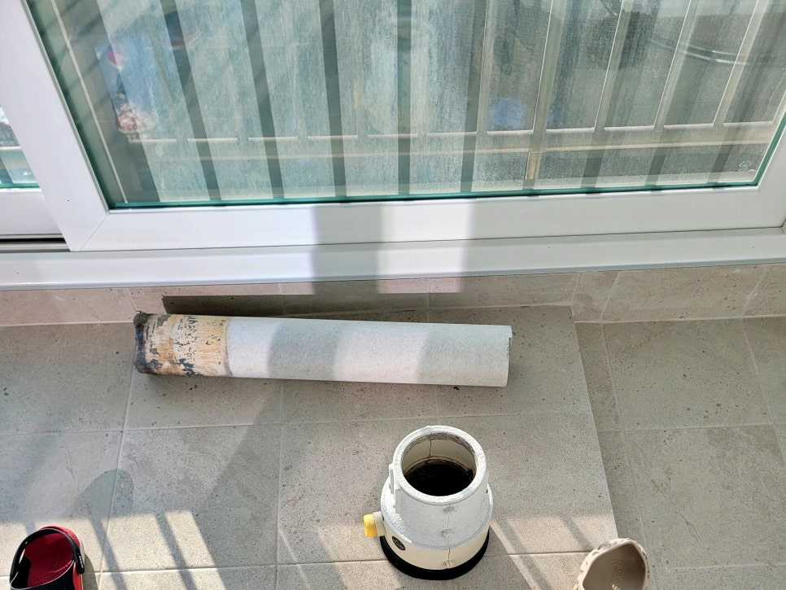
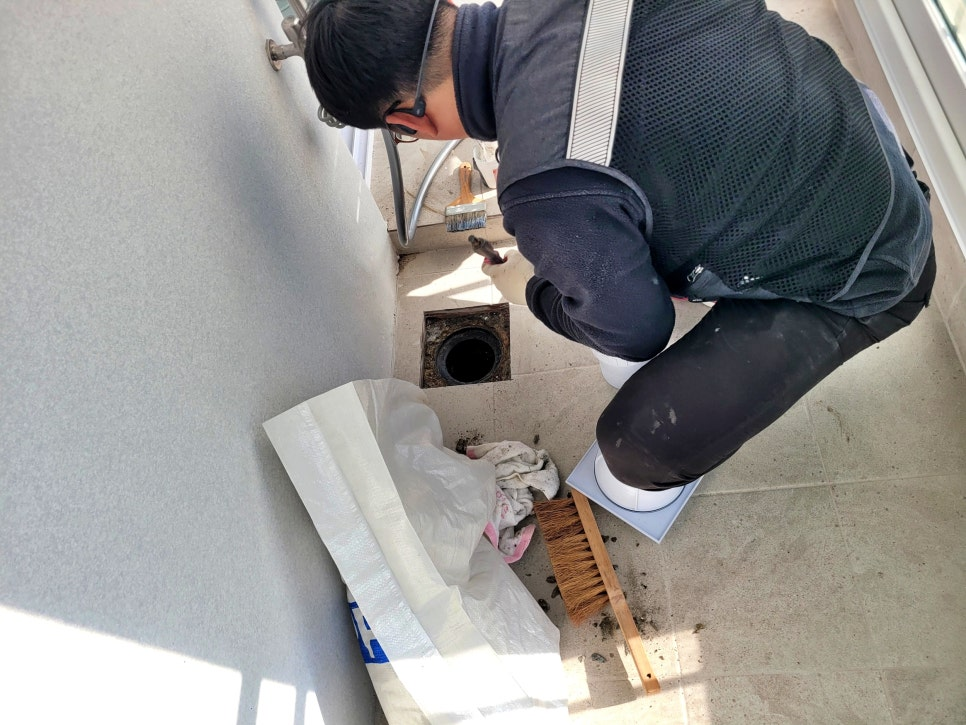
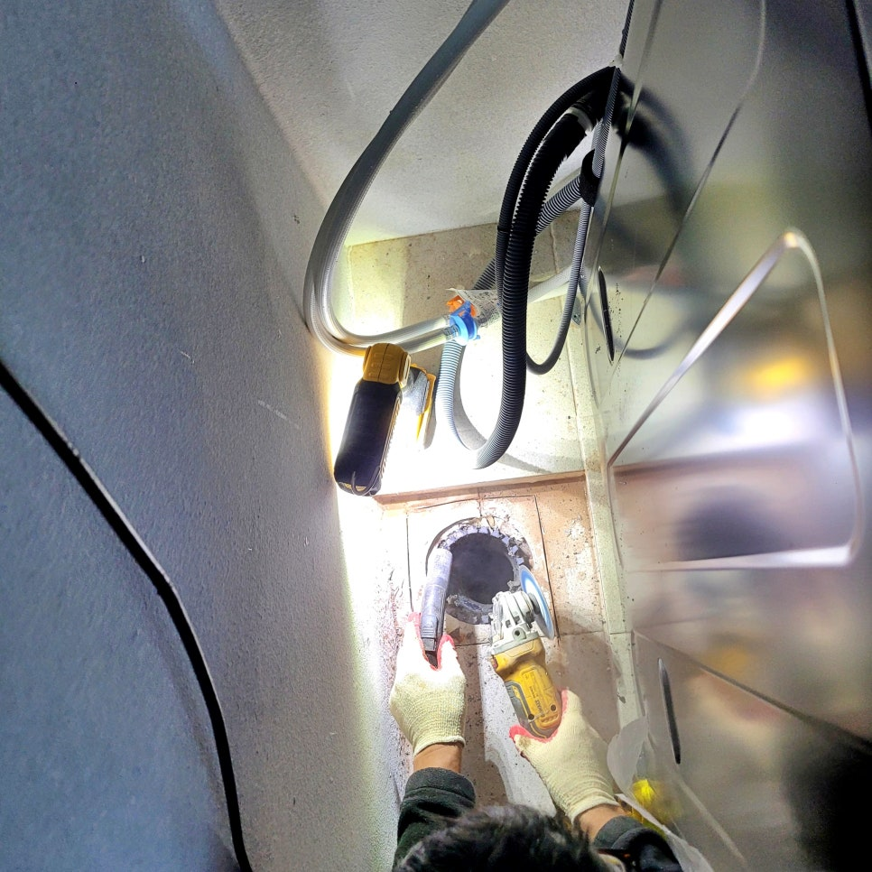
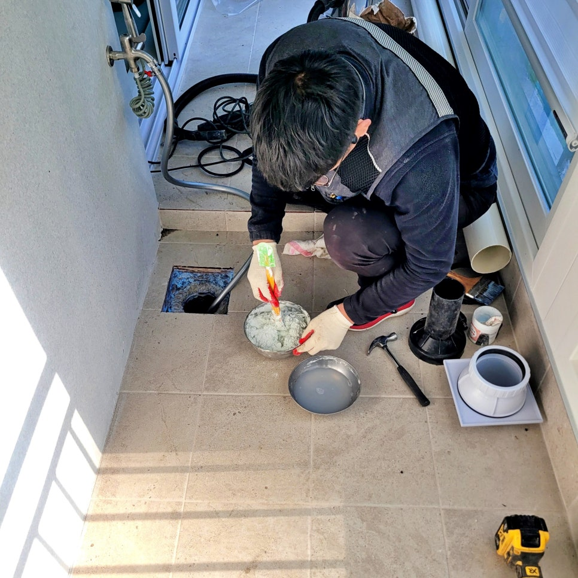
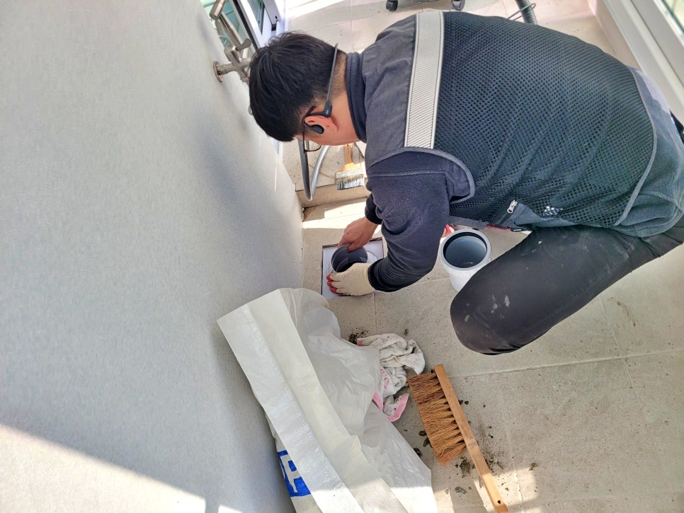

🏠 오산시 원동 베란다 우수관누수 유가 교체 방수시공으로 해결
오산 원동 하수구막힘 전문 시공 후기

📋 작업 개요
- 위치: 오산 원동, 원동, 오산
- 서비스 유형: 하수구막힘, 배관막힘, 누수수리, 악취차단
- 작업 일시: 2026. 1. 31. 19:01
- 업체명: 하수구수사대 (010-5615-2118)
🔍 문제 상황
오산시 원동 베란다 우수관누수
배관 및 유가 교체 방수 시공으로
완벽하게 해결했어요.!!!
안녕하세요?
오산시 원동 베란다 우수관누수 방수
전문업체 하수구수사대 인사드립니다.
오늘 저희가 준비한 시공 후기는
오산시 원동 아파트 베란다누수로
아래층에 물이 떨어지는 문제를
우수관 유가 교체와 방수 시공으로
해결한 실제 사레입니다.
우수관 유가 철거 후 모습
오산시 원동 베란다누수 원인 파악을
위해 현장에 방문했는데요. 비가 오는
날이나 세탁기 사용 시마다 아래층에
물이 새는 문제의 원인을 확실하게
찾아 해결해야 했습니다.
기존에 설치됐던 노후 우수관 철거 모습
점검 결과,
오산시 원동 베란다누수 원인은 화면에
보이는 것처럼 노후된 배관과 유가 주변

🔎 원인 분석
💡 전문가 진단: 오산시 원동 베란다 우수관누수배관 및 유가 교체 방수 시공으로완벽하게 해결했어요.!!!
방수층 사이로 물이 스며들어 아래층에
떨어진 것인데요.
지금부터 그 이후 어떤 과정을 걸쳐
문제의 원인을 확실하게 해결했는지
자세히 살펴보겠습니다.
1. 베란다 우수관누수 교체 방수 시공
먼저 작업을 위해 기존에 설치된
우수관과 하수관 배관을 안전하게
분리하여 철거했습니다.
기존 노후된 방수층을 제거하는 과정
이후 화면과 같이 기존 유가를
제거한 뒤 수명이 다해 갈라지고
부식된 주변 방수층을 깨끗하게
긁어냈는데요.
특수 방수제 시공 과정
현장에 새 방수제가 완벽하게 잘
접착될 수 있도록 주변 이물질과
먼지를 제거하는 기초 작업을
아주 꼼꼼하게 진행했습니다.
고성능 방수 처리를 위해 특수
배합된 방수제를 사용해 배수구

🔧 작업 과정
주변과 바닥 타일 안쪽까지 빈틈
없이 메워주었는데요.
특히 물이 스며드는 경로를 원천
차단할 수 있도록 방수층을 아주
두텁고 정밀하게 형성하며 시공을
마무리했습니다.
새로 설치된 우수관 유가
방수 작업 후에는 내구성이 뛰어난
새 유가로 교체 설치했고요.
새 우수관 설치 후 모습
화면과 같이 새 우수관을 정확히
재단해 위층 슬라브 배관과 정확히
삽관해 견고하게 재연결했습니다.
원동 베란다누수 또 다른 원인인
세탁기 옆 하수관 주변 유가와
배관도 우수관과 같이 철거 작업과
방수 시공을 동일하게 진행했고요.
모든 공정 완료 후
양쪽 배수구에 많은 양의 물을 꽤
오랜 시간 흘려보내며 아래층
베란다 천장누수 발생 여부를
확인해 보니 더 이상의 문제는
발생하지 않았습니다.
2. 원동 베란다 우수관누수 시공을 마치며
오늘 소개한
원인은 노후된 유가와 배관 그리고
주변 방수층이 유실된 틈으로 물이
스며들어 발생한 것이고요.
배관 설비 전문가인 하수구수사대가
정확한 원인 진단과 신속한 교체 및
방수 시공으로 문제를 해결해 드려
이제 비가 오거나 세탁기를 사용해도
아래층 베란다 누수 걱정 없이 안심할
수 있게 되었답니다.


✅ 작업 완료
지금 혹시
세탁기를 사용하거나 비가 오면
아래층에 물이 샌다면, 곧바로
하수구수사대를 불러 주십시오.
지금까지
"오산시 원동 베란다 우수관누수 유가
교체 방수시공으로 해결" 시공 후기를
정독해 주셔서 감사합니다.
#오산시원동베란다천장누수 #오산시원동베란다배관누수 #오산원동우수관누수 #오산시원동세탁기배관누수 #오산원동세탁실누수 #오산원동베란다유가방수 #오산원동베란다방수




⚠️ 베란다 누수 및 방수 관리 방법
- ✅ 비가 많이 올 때 창틀 주변이나 아래층 천장에 얼룩이 생기는지 정기적으로 확인해 보세요.
- ✅ 우수관 주변 실리콘 마감이 들뜨거나 깨진 틈새가 있는지 손상 여부를 수시로 체크하세요.
- ✅ 베란다 바닥 타일의 줄눈(메지)이 소실되면 그 틈으로 물이 침투하여 누수가 유발됩니다.
- ✅ 누수 의심 증상 발견 시 방치하면 아래층 손실이 커지므로 즉시 전문가의 진단을 받으십시오.
💡 핵심 정리
- 확실한 장비 작업(내시경 점검 및 샤프트 스케일링)으로 원인을 뿌리 뽑습니다.
- 작업 후 1년 이내에 동일한 부위 재발 시 100% 무상 A/S 서비스를 보장합니다.
- 서울 · 경기 · 인천 전 지역에 24시간 언제든 긴급 출동할 수 있도록 항시 대기 중입니다.
❓ 자주 묻는 질문 (FAQ)
🚨 오산 원동 하수구막힘 문제로 고민이신가요?
정확한 원인 진단과 확실한 시공으로 재발 없는 해결을 약속드립니다.
24시간 긴급 출동 | 서울 · 경기 · 인천 전지역 | 1년 내 재발 시 무상 A/S